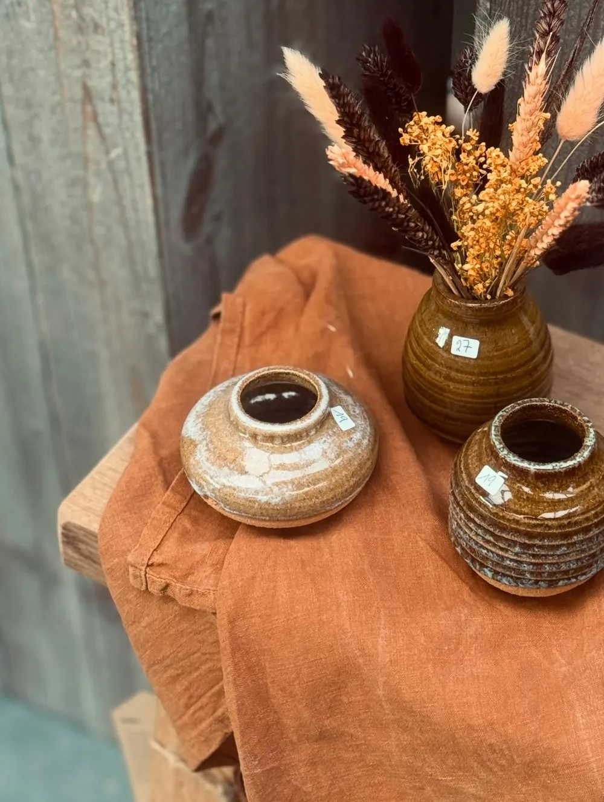
TafelplezierVoor thuis
Gebruikskeramiek om elke dag uit te eten en te drinken, en cadeaus voor wie je graag ziet.
- Tassen, kommen en borden
- Vazen en lampen
- Servies op maat, ook met namen of data
Ik ben Elise. In mijn atelier draai ik tassen, borden, vazen en lampen voor thuis, servies op maat voor bedrijven en horeca, en leer ik jou zelf achter het draaiwiel zitten.
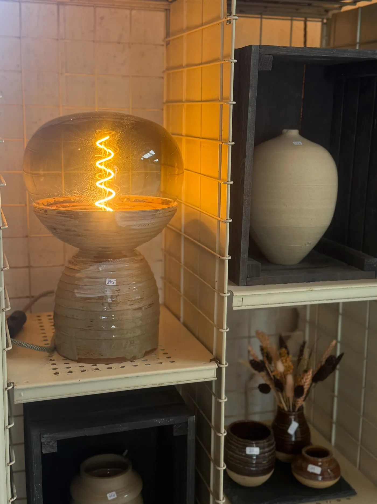
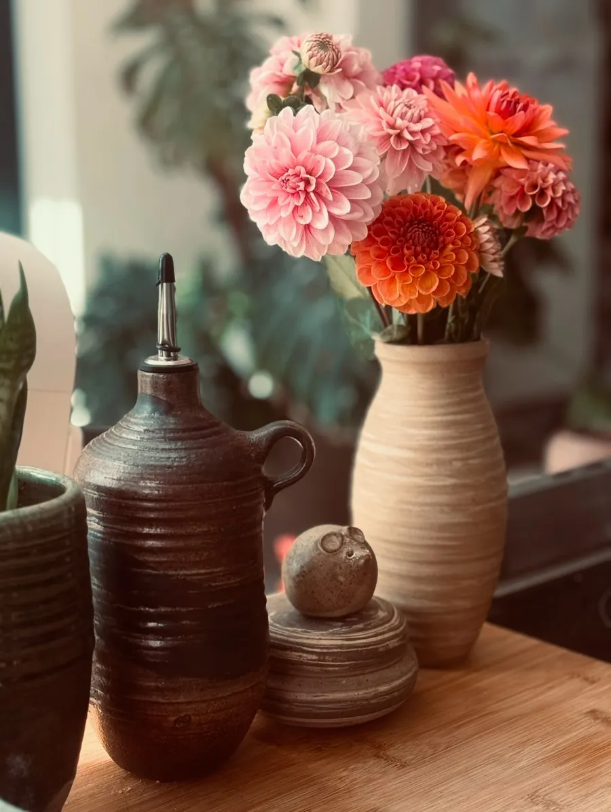
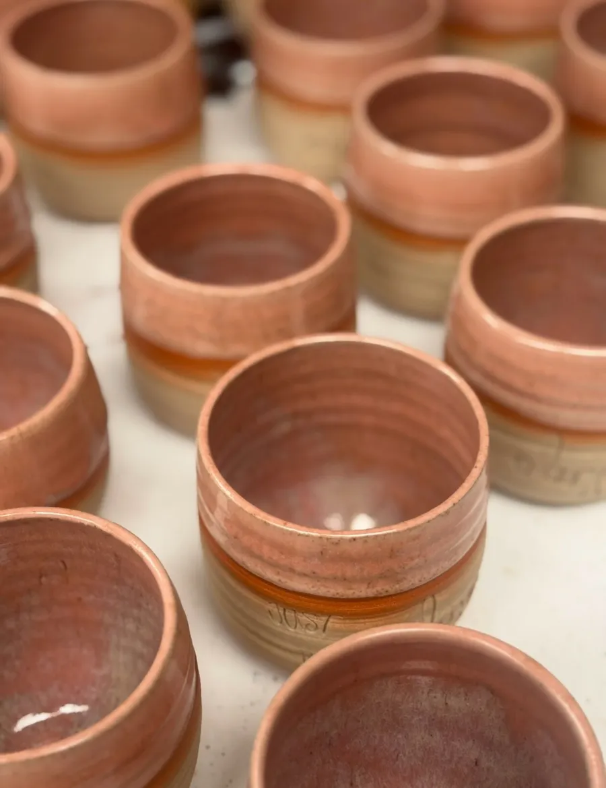
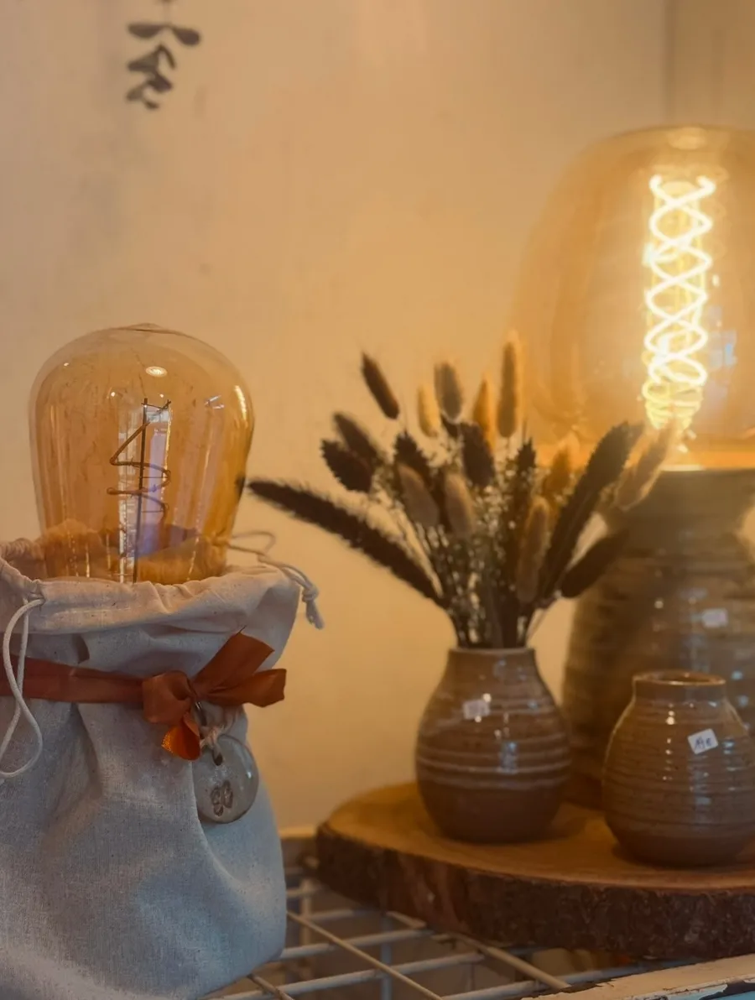
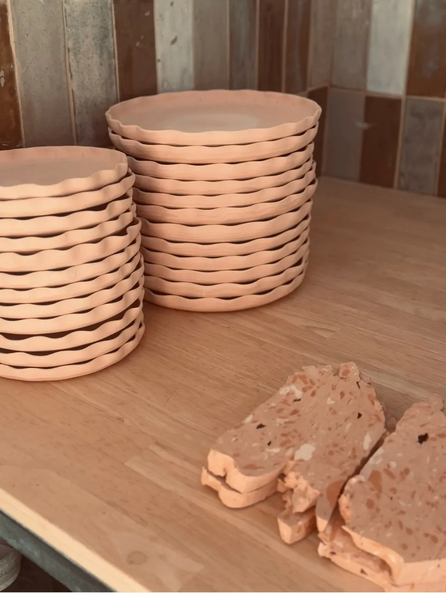
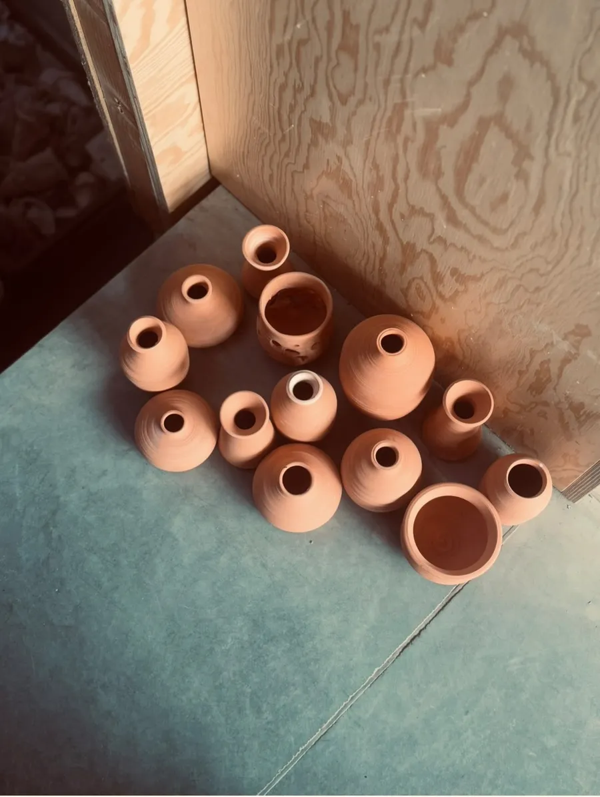
"Op een dag dacht ik FOERT. FOERT tegen twijfelen en luisteren naar wat iedereen van mij verwacht."
Dus begon ik. Mijn atelier is intussen mijn knusse plek, waar je zo binnenstapt. Vaak ligt mijn hond er al te slapen.
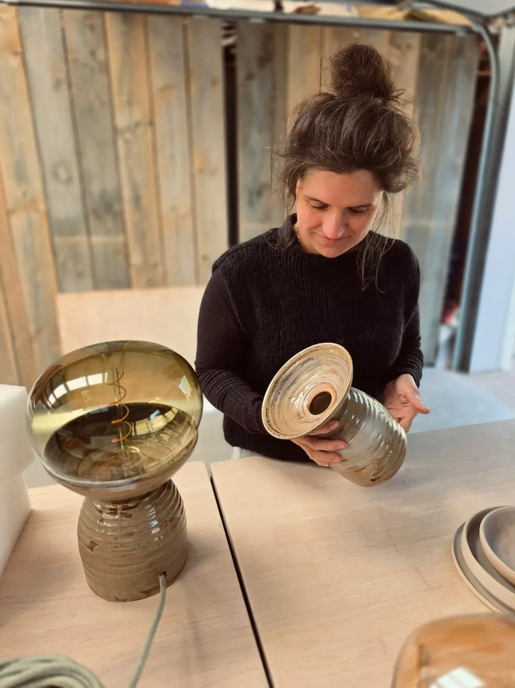
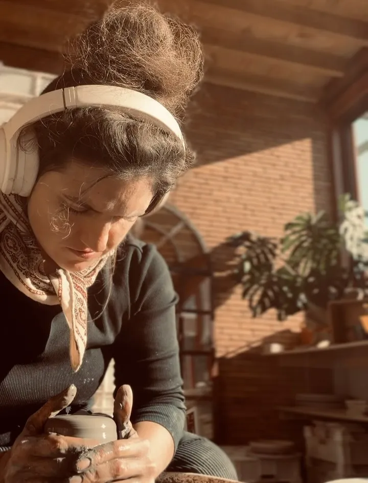
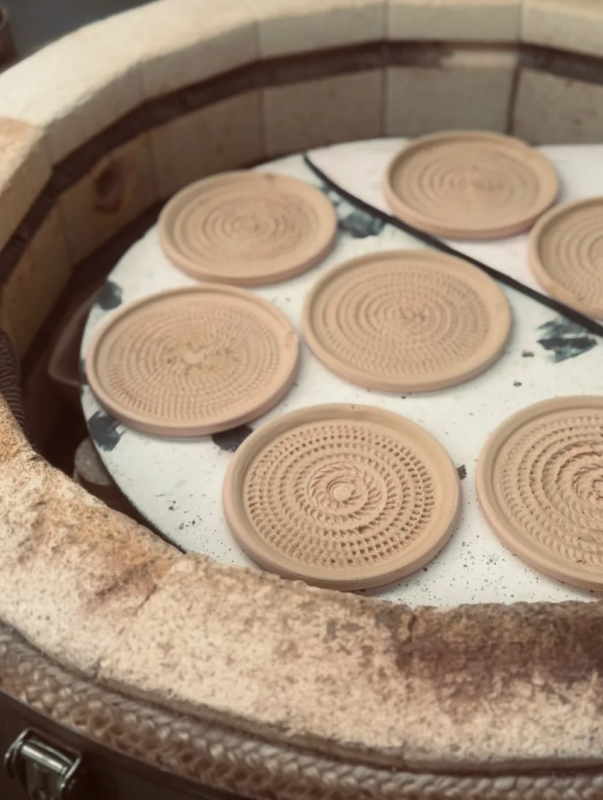
Vaak vertrek ik van grondstoffen waar een ander aan voorbijloopt. Iets een tweede leven geven, daar word ik blij van.
Wordt glazuur, soms met maar twee ingrediënten.
Uit de grond, die aannemers me laten ophalen.
Wat overblijft, gaat niet weg. Het wordt iets nieuws.
Ik gebruik het meerdere keren opnieuw.
Hier draait het niet om perfectie. Wel om karakter.
Kom kijken wat er in de winkel staat, of vraag iets op maat. Een servies met jullie data op, tassen met je logo of een tapasset voor je restaurant: we bekijken het samen.

TafelplezierGebruikskeramiek om elke dag uit te eten en te drinken, en cadeaus voor wie je graag ziet.
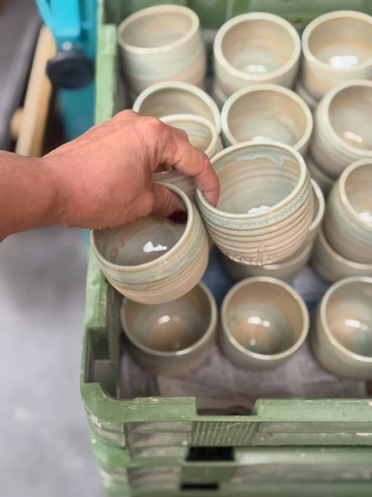
Geven met goestingKeramiek met jullie verhaal erin, gedraaid in Staden in plaats van besteld uit een catalogus.
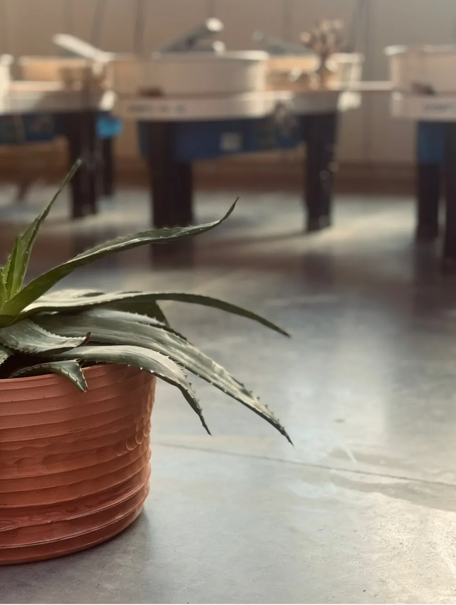
Max. 6 personenZelf achter het draaiwiel, in een klein groepje en met rustige uitleg. Ook als je nog nooit klei aanraakte.
"Elise kreeg van mij de vraag om mijn man te verrassen met ons 20 jarig samen zijn. (...) Mijn man was dan ook ontzettend ontroerd met dit cadeau en vond de schaal met gepersonaliseerde data de Max!"Gianna Werbrouck · Google
"Ik ben de dagworkshop begonnen als beginner en zó tevreden dat ik eindelijk de techniek begrijp. (...) Daarbovenop was de lunch dik in orde!"Fuying Ruan · Google
"Voor ons alledrie (oma, dochter en kleindochter) was dit de allereerste keer pottenbakken. (...) Dankjewel Elise, we komen zeker es terug! Want we zijn superblij met ons pottekes! 😄"Hannelore Vandecappelle · Google
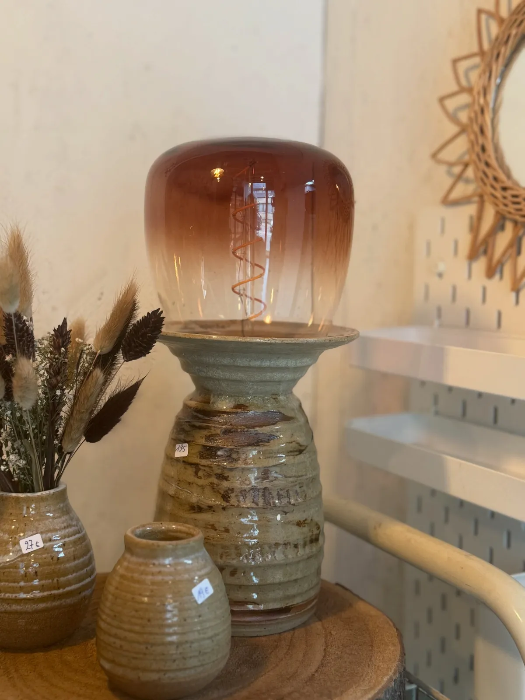
Elke zaterdagvoormiddag staat de deur open. Wil je liever op een ander moment langskomen, stuur me dan even een mailtje.
Zaterdag van 9u tot 12u
of op afspraak
Vredestraat 16
8840 Staden
Ik maakte deze demo voor jullie om te tonen wat er kan. Na een kort gesprek maak ik er iets veel persoonlijkers van, helemaal naar jullie wens.
Vrijblijvend. Ik kom langs of we bellen.
Op maat, op jullie eigen domein.
Geen voorschot. Jullie betalen pas als alles klaar is.
Hosting, domeinnaam en kleine wijzigingen, zoals nieuwe openingsuren.
Omdat een voorbeeld meer zegt dan een mail. Zo zien jullie meteen wat er kan, en het kost jullie niets.
Nee. Het gesprek is vrijblijvend. Vinden jullie het niks, dan is het daarmee gedaan.
Na ons gesprek staat jullie site binnen 10 tot 14 dagen online.
Zeker. Jullie domeinnaam kan gewoon blijven, de nieuwe site komt in de plaats van de oude.
Nee, dat doe ik op basis van ons gesprek. Eigen foto's zijn mooi meegenomen, maar niet nodig om te starten.